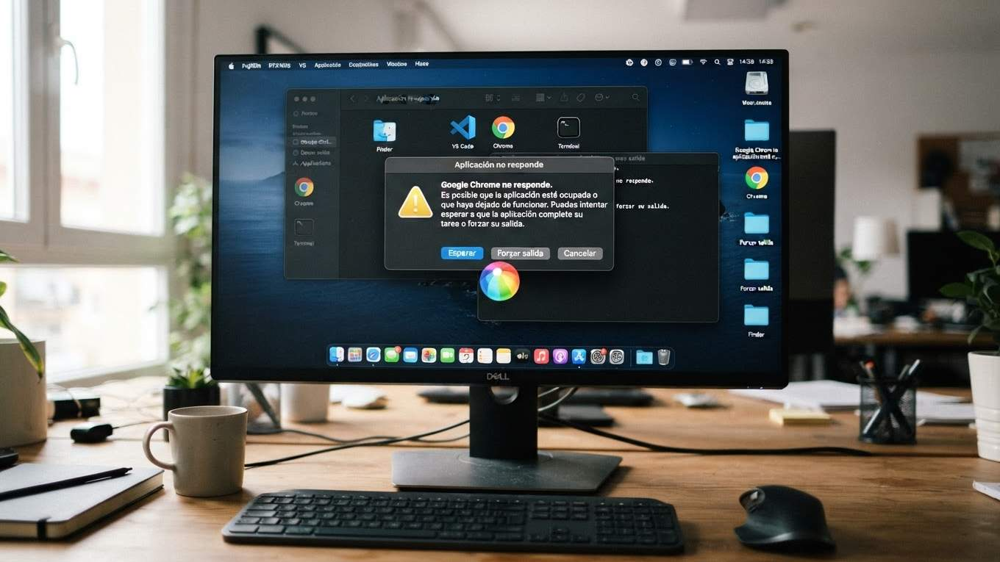
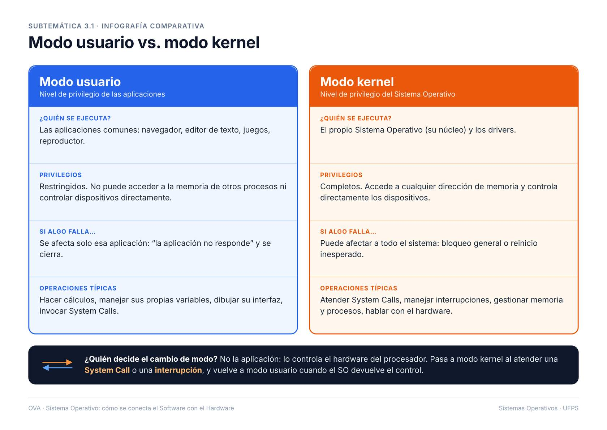

3. Modos de Ejecución: Usuario y Kernel

pantalla de error o bloqueo del sistema, por ejemplo un aviso de “la aplicación no responde"

privilegios, riesgos y ejemplos de cada modo
¿Por qué es peligroso que una aplicación tenga acceso al modo kernel?
El modo kernel es un nivel privilegiado de operación en un sistema operativo que permite acceso directo a los recursos de hardware y memoria. Si una aplicación no confiable obtiene acceso a este modo, podría realizar cambios no autorizados, comprometer la seguridad del sistema o causar fallos críticos. Por esta razón, los sistemas operativos modernos implementan estrictos controles para limitar el acceso al modo kernel.
Además, el acceso no controlado al modo kernel podría permitir a un atacante ejecutar código malicioso con privilegios elevados. Esto podría resultar en la exposición de datos sensibles o en la interrupción de servicios esenciales. Por lo tanto, es crucial mantener una separación clara entre el modo usuario y el modo kernel para garantizar la estabilidad y seguridad del sistema.
¿Qué tareas solo puede realizar el modo kernel?
El modo kernel es responsable de gestionar las operaciones críticas del sistema operativo. Esto incluye la administración de la memoria, la gestión de procesos y la comunicación con dispositivos de hardware. Estas tareas requieren un acceso privilegiado para garantizar que se realicen de manera segura y eficiente.
Además, el modo kernel maneja las interrupciones del sistema y las llamadas al sistema (system calls) realizadas por las aplicaciones en modo usuario. Estas funciones son esenciales para el funcionamiento del sistema y no pueden ser realizadas directamente por aplicaciones en modo usuario debido a las restricciones de seguridad.
¿Cómo protege el modo usuario la estabilidad del sistema?
El modo usuario limita las capacidades de las aplicaciones para interactuar directamente con el hardware y los recursos críticos del sistema. Esto previene que errores en las aplicaciones afecten la estabilidad general del sistema operativo. Al operar en un entorno restringido, las aplicaciones no pueden realizar cambios no autorizados en el sistema.
Además, el modo usuario permite que el sistema operativo controle y supervise las acciones de las aplicaciones. Si una aplicación intenta realizar una operación no permitida, el sistema operativo puede intervenir y evitar posibles daños. Esto ayuda a mantener un entorno de ejecución seguro y estable para todas las aplicaciones.
¿Cuándo y cómo ocurre el cambio de modo durante una System Call o una interrupción?
El cambio de modo de usuario a modo kernel ocurre cuando una aplicación realiza una llamada al sistema (system call) o cuando se produce una interrupción de hardware. Durante este proceso, el sistema operativo transfiere el control al kernel para manejar la solicitud o interrupción de manera segura.
Este cambio implica guardar el estado actual del procesador y cargar un nuevo contexto de ejecución con privilegios elevados. Una vez que el kernel completa la tarea requerida, el sistema vuelve al modo usuario, restaurando el estado anterior del procesador. Este mecanismo asegura que las operaciones críticas se realicen de manera controlada y sin comprometer la seguridad del sistema.
Modo de operación del sistema operativo donde las aplicaciones se ejecutan con permisos limitados. Ejemplo: Ejecutar un navegador web.
Modo de operación con acceso completo al hardware y recursos del sistema. Ejemplo: Gestión de memoria por el sistema operativo.
Niveles de acceso asignados a procesos o usuarios para proteger recursos. Ejemplo: Un usuario estándar no puede instalar software.
Medidas implementadas para proteger datos y recursos del sistema. Ejemplo: Uso de contraseñas para acceder al sistema.
Capacidad del sistema para operar sin fallos. Ejemplo: Un servidor que funciona continuamente sin interrupciones.
Interfaz que permite a las aplicaciones solicitar servicios al sistema operativo. Ejemplo: Abrir un archivo desde un programa.
Haz clic en cada tarjeta para ver la respuesta.
Introducción al Cambio de Modo durante una System Call
El proceso de cambio de modo es fundamental para la seguridad y el funcionamiento de los sistemas operativos modernos. A continuación, se describe paso a paso cómo ocurre este cambio durante la atención de una System Call.
Resumen del Proceso de Cambio de Modo
El cambio de modo durante una System Call permite que el sistema operativo ejecute operaciones críticas de manera segura, alternando entre el modo usuario y el modo kernel según sea necesario para proteger la integridad del sistema.
La aplicación se ejecuta en modo usuario
En este estado, la aplicación opera con permisos restringidos, limitando el acceso directo a los recursos críticos del sistema para garantizar la seguridad y estabilidad del sistema operativo.
La aplicación solicita un servicio al sistema operativo mediante una System Call
La aplicación realiza una llamada al sistema para solicitar servicios específicos, como acceso a archivos o comunicación en red, que requieren privilegios elevados.
El procesador cambia a modo kernel
El procesador cambia al modo kernel, habilitando el acceso completo a los recursos del sistema y permitiendo la ejecución de operaciones privilegiadas.
El sistema operativo atiende la solicitud con privilegios completos
El sistema operativo procesa la solicitud de la aplicación utilizando sus capacidades completas, asegurando que las operaciones se realicen de manera segura y eficiente.
El sistema operativo finaliza la atención y devuelve el control a la aplicación
Una vez completada la solicitud, el sistema operativo prepara los resultados y se dispone a devolver el control al contexto de la aplicación.
El procesador retorna a modo usuario
El procesador regresa al modo usuario, restaurando las restricciones de acceso y devolviendo el control a la aplicación que realizó la solicitud.
Modo usuario
El modo usuario es un entorno de operación en el que las aplicaciones y programas se ejecutan con permisos limitados. Esto asegura que las acciones realizadas por el software no interfieran con el núcleo del sistema operativo, proporcionando una capa de seguridad adicional.
En este modo, los procesos tienen acceso restringido al hardware y a los recursos críticos del sistema. Esto permite que el sistema operativo mantenga la estabilidad y prevenga que errores en las aplicaciones afecten el funcionamiento general del sistema.
Modo kernel
El modo kernel es un entorno de operación donde el sistema operativo tiene acceso completo a todos los recursos del hardware. En este modo, se ejecutan las funciones críticas del sistema, como la gestión de memoria, el control de dispositivos y la administración de procesos.
Este modo permite que el sistema operativo interactúe directamente con el hardware, lo que es esencial para realizar tareas de bajo nivel. Sin embargo, también implica que cualquier error en este nivel puede tener consecuencias graves para la estabilidad del sistema.
¿Cuál es la principal función del modo usuario en un sistema operativo?
Seleccione la opción que mejor complete la frase: El modo kernel se caracteriza por: